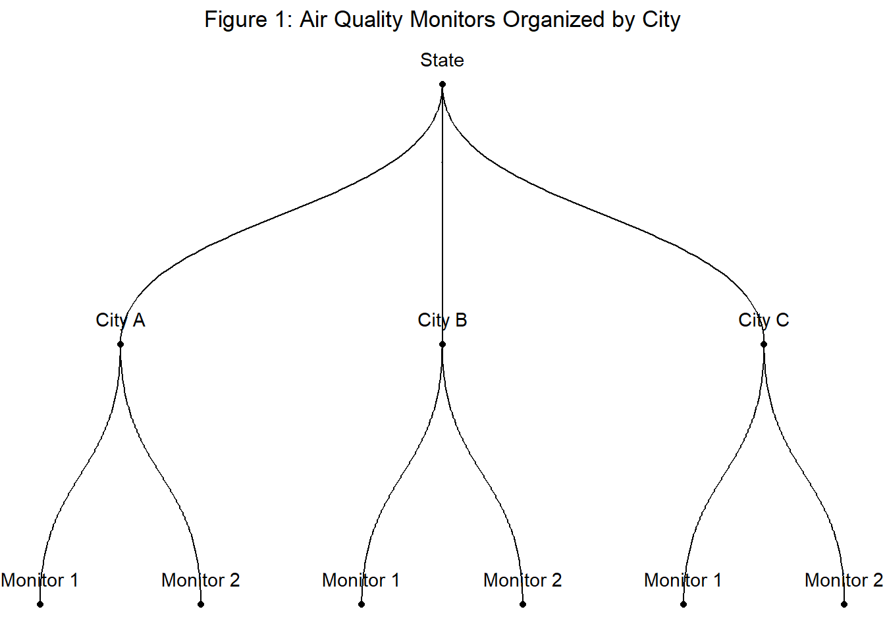

# step 0: load your packages
library(tidyverse)
library(ggthemes)
library(stringr)
# Step 1: Define the affordability thresholds (e.g., 30%, 40%, and 50%)
affordability_thresholds <- c(0.3, 0.4, 0.5)
# Step 2: Generate a sequence of incomes from 40,000 to 500,000
income_sequence <- seq(25000, 250000, by = 50)
# Step 3: Create a new dataframe to store the results
result_df <- data.frame(Income = income_sequence)
# Step 4: Calculate the percentage of affordable units for each income level and each threshold
for (threshold in affordability_thresholds) {
result_df[paste0("Percentage_Affordable_", threshold * 100)] <- sapply(result_df$Income, function(income) {
affordable_units <- df$annual <= income * threshold
percentage_affordable <- sum(affordable_units) / length(affordable_units) * 100
return(percentage_affordable)
})
}
# Step 5: Plot the results using ggplot2 with labels
plot <- ggplot(result_df, aes(x = Income)) +
geom_line(aes(y = Percentage_Affordable_30), color = "blue", size = 1) +
geom_line(aes(y = Percentage_Affordable_40), color = "green", size = 1) +
geom_line(aes(y = Percentage_Affordable_50), color = "red", size = 1) +
scale_x_continuous(labels = scales::comma_format()) +
labs(x = "Household Income", y = "Percentage of Apartments Affordable",
title = "Affordability of Apartments in Massachusetts",
subtitle = "Craigslist Postings: 2020-2021",
color = "Affordability Threshold") +
# Add labels for the lines (showing line names)
geom_text(data = data.frame(x = 200000, y = tail(result_df$Percentage_Affordable_30, 1), label = "30% of Income"),
aes(x, y, label = label), color = "blue", vjust = 18, hjust = 0) +
geom_text(data = data.frame(x = 200000, y = tail(result_df$Percentage_Affordable_40, 1), label = "40% of Income"),
aes(x, y, label = label), color = "green", vjust = 16, hjust = 0) +
geom_text(data = data.frame(x = 200000, y = tail(result_df$Percentage_Affordable_50, 1), label = "50% of Income"),
aes(x, y, label = label), color = "red", vjust = 14, hjust = 0) +
theme_solarized() +
theme(
plot.title = element_text(hjust = 0.5), # Center the plot title
plot.subtitle = element_text(hjust = 0.5), # Center the subtitle
plot.margin = margin(60, 20, 20, 20) # Add some margin around the plot
)Stats and Stuff: A Josh Rosen Blog
——————————————————————————————
Rental Markets: A Cool Graph and How to Make it
Welcome!
August 1, 2023
Today’s post will be a pretty short one. Let me set the stage: it’s 9pm on a beautiful Friday night in the middle of the Boston summer. You’re on the on the Common, watching Shakespeare live with a few friends you met rock climbing. Looking up at the Boston skyline you start to wonder: what percent of this could me mine?1
Descriptive Analysis
It’s a question as old as time, and one that I set out to answer so you wouldn’t have to.2 In more explicit terms, here I’ll present a descriptive analysis of Boston/Boston area rental unit postings with the goal of visualizing what percent of listings are affordable by income level.
On a more serious note, this post will be far less technical than my series on Bayesian Hierarchical Modeling in R, and certainly not an academic analysis of rental markets. Instead, we’re here to make a cool graph, promote some data, and poorly scrape Zillow. Let’s get crazy.
In this plot, we see three sigmoid-esq curves representing the percent of rental units affordable under the specified budgets. Households are generally expected to pay 30% of their income towards housing, but in many markets this is no longer attainable.3 Households that pay greater than 30% of their income towards rent are denoted as rent burdened, and households that pay greater than 50% of their income on rent are known as severely rent burdened. I therefore construct the three lines with these thresholds in mind.
Unsurprisingly, the majority of listings are relatively affordable for households making roughly $75,000/yr, or just below the state’s median household income.4. We know from much more comprehensive analysis that in the city of Boston, 52% of households are rent burdened, and 34% of BIPOC renters are severely burdened.5
Another way to view this data might be just to produce a simple histogram displaying the distribution of listing prices. Formatting the data like this also helps to validate our existing knowledge of the problem with the data we’ve obtained. For example, we know that the average price of a rental listing in Boston during 2021 was $2,534, but we see here that the state-wide Craigslist listings are centered significantly lower.6
Finally, let’s note some important qualifiers. First, the data I used comes from Craigslist postings scraped during and just after the pandemic. As a result, it’s likely that prices are skewed downward both owing to the selection bias of Craigslist, as well as the pandemic’s impact on rental markets.7. In addition, this data contains listings from across the state, rather than simply the Boston metropolitan area. Finally, it’s important to note that the distribution of rental listings may not be representative of what rental households pay on average. In other words, this data answers a specific question, and it does a mediocre job to do so.
Replication
Creating the Plot
I’ve included the code below, but there’s nothing too complicated in how to organize the data for a presentation like what we see here. The one major thing to note here is that the code assumes your dataframe is titled df8, and annual rental costs are organized in a column called annual.
Obtaining Rental Listing Data
What is a bit more complicated is the process of obtaining rental listing data. Here I’m using Craigslist postings from 2020-2021, which can be found on the Boston Data Portal managed by the Boston Area Research Initiative at Northeastern University. While this data gets updated yearly, we still have a significant lag which makes it more difficult to obtain a real-time account of the Boston rental market. This method also means we aren’t able to obtain useful covariates by which we might group listings (neighborhood, distance from public transit, number of bedrooms, etc).
Scraping Zillow
Alternatively, I’ve included the Python code to scrape similar data from Zillow. Note that Zillow is infamous for making their listings difficult to obtain, so I cannot promise this scraper will work in the future. Nevertheless, this methods and the subsequent cleaning process below manages to produce a dataframe with all the descriptive data we might want. To tweak the location parameters, find the geography you want on Zillow and search the coordinates from the website’s source code. By doing this you’ll be able to obtain geographic bounds for any area/rental market.
from urllib.parse import urlencode
import json
import httpx
BASE_HEADERS = {
"accept-language": "en-US,en;q=0.9",
"user-agent": "Mozilla/5.0 (Windows NT 10.0; Win64; x64) AppleWebKit/537.36 (KHTML, like Gecko) Chrome/96.0.4664.110 Safari/537.36",
"accept": "text/html,application/xhtml+xml,application/xml;q=0.9,image/webp,image/apng,*/*;q=0.8",
"accept-language": "en-US;en;q=0.9",
"accept-encoding": "gzip, deflate, br",
}
url = "https://www.zillow.com/search/GetSearchPageState.htm?"
parameters = {
"searchQueryState": {
"pagination": {},
"usersSearchTerm": "Boston, MA",
"mapBounds": {
# Adjust these coordinates to include the area of Boston
"west": -71.191155,
"east": -71.000257,
"south": 42.330834,
"north": 42.400819,
},
"isForRent": True, # Include rental properties only
"isForSaleByAgent": False # Exclude properties listed for sale by agents
},
"wants": {
"cat1": ["listResults", "mapResults"], "cat2": ["total"]
},
"requestId": 2,
}
response = httpx.get(url + urlencode(parameters), headers=BASE_HEADERS)
assert response.status_code == 200, "request has been blocked"
data = response.json()
results = response.json()["cat1"]["searchResults"]["mapResults"]
print(json.dumps(results, indent=2))
print(f"found {len(results)} rental property results in Boston")import pandas as pd
def parse_results_to_dataframe(results):
# Initialize empty lists to store extracted information
zpid_list = []
price_list = []
beds_list = []
baths_list = []
area_list = []
lat_list = []
long_list = []
status_type_list = []
price_label_list = []
street_address_list = []
zipcode_list = []
city_list = []
state_list = []
# Iterate through each element in the results list
for data in results:
zpid = data.get('zpid', None)
price = data.get('price', None)
beds = data.get('beds', None)
baths = data.get('baths', None)
area = data.get('area', None)
latLong = data.get('latLong', None)
statusType = data.get('statusType', None)
priceLabel = data.get('priceLabel', None)
address = data.get('address', None)
if latLong:
latitude = latLong.get('latitude', None)
longitude = latLong.get('longitude', None)
else:
latitude = None
longitude = None
# Extracting streetAddress, city, state, and zipcode separately
streetAddress = city = state = zipcode = None
if address:
address_parts = address.split(', ')
streetAddress = address_parts[0].strip() if len(address_parts) > 0 else None
city = address_parts[1].strip() if len(address_parts) > 1 else None
state = address_parts[2].strip() if len(address_parts) > 2 else None
zipcode = address_parts[3].strip() if len(address_parts) > 3 else None
# Append data to respective lists
zpid_list.append(zpid)
price_list.append(price)
beds_list.append(beds)
baths_list.append(baths)
area_list.append(area)
lat_list.append(latitude)
long_list.append(longitude)
status_type_list.append(statusType)
price_label_list.append(priceLabel)
street_address_list.append(streetAddress)
zipcode_list.append(zipcode)
city_list.append(city)
state_list.append(state)
# Create a dictionary to convert lists to a dataframe
data_dict = {
'zpid': zpid_list,
'price': price_list,
'beds': beds_list,
'baths': baths_list,
'area': area_list,
'latitude': lat_list,
'longitude': long_list,
'statusType': status_type_list,
'priceLabel': price_label_list,
'streetAddress': street_address_list,
'zipcode': zipcode_list,
'city': city_list,
'state': state_list
}
# Create the dataframe
df = pd.DataFrame(data_dict)
return df
# Call the function and get the resulting dataframe
df = parse_results_to_dataframe(results)Closing Thoughts
With that, go out and have fun! Slice up the data this way and that. Show me this data sorted by apartments within 10 minutes of a T stop. Do it all so I won’t have to.
——————————————————————————————
Introduction to Bayesian Hierarchical Modeling in R
Welcome!
July 7, 2023
Welcome to part 1 of N on Bayesian Hierarchical Modeling in R. I intend for this to be a series where we can explore in evermore detail both the fundamentals and applications of Bayesian hierarchical modeling. The goal: as \(lim_{{N \to \infty}} f(N)\), we’ll find ourselves more equipped to consider and apply these methods to a broad array of potential problems.
In the limit, we will all be Bayesians.
The intended audience is someone with a sound understanding of statistics, in either the Bayesian or Frequentist camps. That being said, don’t expect to find anything too technical in this article (no asymptotics here). I’m targeting this blog post for students seeking to both expand their skill set/intuition and get a little little more out of their modeling approach. In addition, I will provide a brief review of Bayesian estimation for those coming in with more of a Frequentist background.
In terms of programming experience, I expect readers to be well versed in R. However, I will introduce new concepts and tools as they become relevant. The majority of this tutorial will utilize the ‘brms()’ package in R. To the extent that this blog post even touches RStan, I will be sure to define and explain anything that looks a bit too foreign to the average R user.
So with that, let’s rock and roll.
Section 1: Let’s Get Bay-Curious
In this section I’ll provide a brief but sufficient review on the fundamentals of Bayesian inference. Readers who are familiar with the Bayesian framework (e.g., the philosophical assumptions and Bayes’ Theorem) can feel free to skip right on ahead to the next section.
Let’s first recall that Bayesian inference allows us to estimate a posterior distribution \(p(\mu | y)\) as the product of our prior knowledge \(p(\mu)\) and some likelihood function \(p(\mathbf{y} | \mu)\). Here the prior distribution \(p(\mu)\) reflects any knowledge about the parameter of interest \(\mu\) that we wish to incorporate. Likewise, the likelihood function (sometimes referred to as the sampling distribution) specifies the relationship between the data \(\mathbf{y} = (y_1, ... , y_n)\) and \(\mu\). This framework allows us to construct a posterior distribution by conditioning prior information on the data.
Using Bayes’ rule, we can formalize this process as:
\[p(\mu | \mathbf{y}) = \frac{ p(\mu) p(\mathbf{y} | \mu) }{ p(\mathbf{y}) }\]
In practice, we can drop the denominator and instead only consider terms that contain our parameter \(\mu\). Note that \(p(\mu | \mathbf{y})\) is a probability density function with \(\int p(\mu | \mathbf{y}) d\mu = 1\), and what matters is how \(p(\mu | \mathbf{y})\) depends on \(\mu\). Clearly \(p(\mathbf{y})\) does not very with \(\mu\), so this term in the denominator only functions as scaling factor. As a result, it’s potentially easier to formulate the posterior approximately as: \[p(\mu | \mathbf{y}) \propto p(\mu)p(\mathbf{y} | \mu)\] or: \[ posterior \propto prior \times likelihood\]
Without losing the thread, I want to note again how wildly useful this framework of obtaining posterior distributions for our parameter of interest is. Using Bayes’ rule, we obtain a full probability model for our parameter of interest (in this case, \(\mu\)), which is incredibly useful for conducting inference, and one of the primary actionable benefits that one gains when working in the Bayesian framework. Since we obtain a full probability model, we can summarize any information that we might need. I’m actually of the view that going full Bayesian does not yet require us to view probability under a new philosophical light9 (I see it more as a way to be explicit about modeling assumptions and to incorporate additional uncertainty), but these small tweaks to the world view can be a helpful way to ease the transition. As you continue on your Bayesian journey (as we all must), it will soon make sense how contrasting views of probability can derive these consequential differences in our modeling approach.
Section 2: Introduction to Bayesian Hierarchical Modeling
With a brief review of Bayes’ Theorem out of the way, we are now free to jump into the meat of this series: Bayesian hierarchical modeling. Hierarchical models, also referred to as multilevel models, are models in which parameters exist in a setting where there is a hierarchy of nested populations. In the simplest form, we can imagine data in which there are two levels: groups and units within groups. Using this approach, we allow for the analysis of complex data structures with multiple levels of variation.
Using this framework allows us to conduct inference on data where the observations are not identically and independently distributed (i.i.d.). For example, suppose we have a fair coin, and are interested in observing the probability of landing a heads. In this case, the observations (coin flips) are i.i.d. because each flip is independent of the others. When we flip the coin twice, the second flip does not depend on the first: thus each flip is independent. Similarly, each flip follows the same probability distribution, and we observe heads with uniform probability of \(p(H) = .5\).
To contrast this, let’s imagine a group of students each from different schools. Each school requires their own coin that is biased in some unknown way. Here, while individual flips remain independent, the underlying probability with which we will observe heads varies across schools. To account for this hierarchical structure, we can use hierarchical modeling.
Motivating Example: Air Quality Within/Across Cities
In the next section, we’ll work with an example examining air quality within cities. For now, let’s introduce this problem conceptually.

- Data: AQI measurements by air monitors in cities in California.
- Hierarchy: Monitors observed in cities, cities observed within a single state.
- Question: How can we estimate the expected AQI for each city?
Let’s also introduce a bit of notation just so nothing gets lost in translation. Here we aim to model our outcome variable \(y\) (AQI) for monitor \(i = 1, 2, 3, ..., n\). Each monitor \(i\) sits within a group \(j\), which here refers to cities. Therefore, index \(j[i]\) denotes the monitor \(i\) for city \([j]\).
If we wish to estimate the expected AQI for each city, there are multiple ways in which we might do so. As we will discuss, each option comes with its own positives and negatives.
Estimate the city-level mean for each city, using only data from the city.
Estimate each city using all data in the state.
Estimate the mean with a hierarchical model using partial pooling.
Estimate the city-level mean for each city, using only data from that city
In this approach, we model the city-level mean as: \(\mu_i = \alpha_{j[i]}^{no \ pool}\), where for each city \(j\), we estimate \(\alpha_j^{no \ pool}\) using only data from city \(j\). As a result, we see that \(\hat{\alpha}_j^{no \ pool} \approx \bar{y}_j\), the city sample mean.
We refer to this estimate as the no pooling model, since there is no pooling of information across cities. Intuitively, it’s easy to see the draw backs of this approach. For example, say the sample size varies across city, and we have reason to believe some city \(j\) in particular lacks enough data to make a true, unbiased estimate of the city’s mean AQI. In this scenario, the no pooling option may lead us to poor estimates based on limited information.
Figure 2 visualizes this problem using simulated data. While this approach isn’t necessarily a bad one, it forces us to think constructively about the validity of our sampling approach and question if \(\hat{y}_j\) is truly a strong estimate of \(y_j\).

Estimate each city using all data in the state
Moving on to our second strategy, we will attempt to estimate each city mean using all data from the state. In this model, \(\mu_i = \mu\), the state-level mean. In contrast to the no pooling options demonstrated in the previous section, this approach is known as complete pooling, since we completely pool information across cities. In other words, we ignore one level of hierarchy (here, cities) and estimate the mean as if our data was taken from a single, state-level sample.
Just as with no pooling, it doesn’t take long to theorize potential problems with this approach. For one, when we completely pool information between cities, we ignore across-city variance which may result in inaccurate estimates for cities with outlying levels. In Figure 2, we denote the across-city mean with a red dotted line, and can easily see that using this estimate would drop significant between-city variation in AQI.
Estimate the mean with a hierarchical model using partial pooling
Finally, we arrive at our last option for estimating mean AQI. In this approach, we formulate a hierarchical model for estimating city-level AQI as follows: \[y_i | \alpha_{j[i]}, \sigma_y \sim N(\alpha_{j[i]}, \sigma_y^2)\], \[\alpha_j | \mu_{\alpha}, \sigma_{\alpha}^2 \sim N(\mu_{\alpha}, \sigma_{\alpha}^2)\]
where:
\(\alpha_j\) represents the city-specific mean,
\(\mu_{\alpha}\) represents the mean of the city AQI levels,
\(\sigma_{\alpha}^2\) represents the between-city variance
Due to this hierarchical set-up, our estimates for city mean AQI will be between the estimates derived from the no pooling and complete pooling methods presented earlier. Typically, we say that the partially pooled mean is shrunk from the no pooling city sample mean towards the complete pooling state mean. This part might not be super intuitive, but we’ll break it down a bit further. First, we can observe that the extent of shrinkage10 from the city-level sample mean towards the state mean decreases with sample size. In other words, as we observe more data at the city-level, the partially-pooled mean is more reliant on that city-level data. Put another way, when we observe enough data from a city to be confident in our sample mean, we become less reliant on the broader state-level mean.
To formalize this, let’s observe the conditional distribution \(\alpha_j | \mathbf{y}, \mu_{\alpha}, \sigma_y, \sigma_{\alpha}\). For the multilevel model \[y_i | \alpha_j[i], \sigma_y \sim N(\alpha{j[i]}, \sigma_y^2)\] with \[\alpha_j | \mu_{\alpha}, \sigma_{\alpha}^2 \sim N(\mu_{\alpha}, \sigma_{\alpha}^2)\] the conditional distribution for the \(j\)-th state mean is given by: \[\alpha_j | \mathbf{y}, \mu_{\alpha}, \sigma_y, \sigma_{\alpha} \sim N(m,v),\] \[v = (n_j/\sigma_y^2 + 1/\sigma_{\alpha}^2)^{-1},\] \[m = v \times (\frac{n_j}{\sigma_y^2}\times \bar{y}_j + \frac{1}{\sigma_{\alpha}^2}\mu_{\alpha}) \Rightarrow \frac{(\frac{n_j}{\sigma_y^2}\times \bar{y}_j + \frac{1}{\sigma_{\alpha}^2}\mu_{\alpha})}{(n_j/\sigma_y^2 + 1/\sigma_{\alpha}^2)},\] where \(n_j\) is the number of observations (in this case, monitors) in city \(j\).11
Given this, \(E[\alpha_j]\) is given by \(m_j = w_j\bar{y}_j + (1 - w_j) \mu_{\alpha}\), the weighted average of city sample mean \(\bar{y}_j\) and the mean of city-level means \(\mu_{\alpha}\). Notably, the weight \(w_j\) is defined by \[w_j = \frac{n_j}{\sigma_y^2} \times (n_j/\sigma_y^2 + 1/\sigma_{\alpha}^2)^{-1},\] which increases with \(n_j\) (the number of observations, in this case monitors, in city \(j\)). While a bit long-winded, we can now see formally why the partially pooled estimate of \(\alpha_j\) is shrunk from the city mean towards the state mean for cities with small sample sizes.
Next, we can visualize this process to continue understanding the intuition behind partial pooling. Figure 3 plots the difference between \(\alpha_j\) (the partially pooled mean of city \(j\)) and \(\bar{y}_j\) (the sample mean for city \(j\)) on the y-axis and the number of monitors by city (the number of observations) on the x-axis. In doing so, we see that as the number of monitors increases (as the number of \(n\) observations increase), the difference between our two mean estimates shrinks towards zero. In other words, here we intuitively visualize that as the number of observations in a given city increases, our estimated mean grows closer to the city sample mean.
For one final note, bear in mind that in order to estimate a full Bayesian hierarchical model of the stated form, we’ll need to establish priors on all model parameters: \(\sigma_y, \ \mu_{\alpha}, \ \sigma_{\alpha}\). Lucky for us, we’ll show in the next section that ‘brms()’ can be a great tool for providing default priors.
Section 3: ‘brms()’ and Applications of Hierarchical Modeling in Stan
In this section, we’ll apply our knowledge of hierarchical models to a simple motivating example. Here we’ll construct a two-level hierarchical model for estimating group means using a normal distribution. To do this, we’ll again utilize the simulated data introduced earlier. Here is the code to reproduce this data on your own. For the non-Bayesians among us, I’ve included a brief review of ‘brms()’ and MCMC sampling that those with sufficient experience can feel free to skip.
# Set seed for reproducibility
set.seed(123)
# Define the number of cities
num_cities <- 50
# Define the mean AQI values for each city
city_means <- seq(50, 250, length.out = num_cities)
# Create an empty data frame to store the simulated data
dat <- data.frame()
# Loop through each city
for (i in 1:num_cities) {
# Define the number of observations per city (varying significantly)
num_obs <- rpois(1, lambda = 50)
# Simulate AQI values for the city using normal distribution
city_data <- data.frame(aqi = rnorm(num_obs, mean = city_means[i], sd = 10))
# Add a city identifier variable
city_data$city <- paste0("City", i)
# Append the city data to the overall dataset
dat <- bind_rows(dat, city_data)
}Review of ‘brms()’ and MCMC sampling
Before we dive in, let’s run through a brief description and review of the ‘brms()’ package in R. The ‘brms()’ package allows us to estimate multilevel models in Stan through our familiar R interface. Stan provides an MCMC sampler for Bayesian analysis by implementing a Hamiltonian Monte Carlo algorithm that converges comparatively quickly even in cases of high-dimensional models and non-conjugate priors.12 If you’re thinking wow, that sounds cool - I wonder how that works? you’re just gonna have to keep wondering because I also have no clue. If I tried to explain, I’d just get it wrong and then whoops no one knows anything anymore. But man, what a cool bunch of words!
What you need to know is this: Bayesian stats is incredibly computationally intensive, and only through advances in modern computation are we able to do it. Posterior distributions, which are so very useful for inference, often can’t be solved analytically. Moreover, common choices of priors often do not result in closed form expressions. The good news is as long as we can obtain a sample from the distribution of interest, we can conduct inference. This is where Markov Chain Monte Carlo (MCMC) sampling comes in. Let’s say our goal is to estimate two parameters \((\mu, \sigma)\) when \(y_i | \mu, \sigma \sim N(\mu, \sigma^2)\) but for common choices of priors on \(\mu\) and \(\sigma\) there is no closed form solution for the posterior distribution \(p(\mu | \mathbf{y})\). If we identify a target parameter vector \(\phi = (\mu , \sigma)\), MCMC allows us to obtain samples \(\phi^{(s)}\) from the target distribution \(p(\phi | \mathbf{y})\). Under the Markov property, \(\phi^{(s)}\) depends on \(\phi^{(s-1)}, \phi^{(s-2)}, ... , \phi^{(1)}\) only though \(\phi^{(s-1)}\). We then approximate quantities of interest, for example \(E(\mu | \mathbf{y})\), using the resulting samples - hence the additional MC for Monte Carlo.
So in short, Stan provides a (relatively) computationally efficient method for obtaining posterior samples, and ‘brms()’ provides a more intuitive method of interacting with simple Stan models. If there is sufficient interest, I’d be happy to do a follow up series on programming in Stan and MCMC sampling.
With that background out of the way, let’s install and load the ‘brms()’ package.
#install.packages("brms")
library(brms)The ‘brms()’ package functions the same as our simple lm() function - albiet for a few additional parameters. We still use the general forula \(y \sim 1\) to estimate \(\mu\) in \(y_i | \mu, \sigma \sim N(\mu, \sigma)\). If we choose not to specify priors (wow, not very Bayesian of us), ‘brms()’ provides defaults. For now, let’s fit a simple model to estimate the mean of a subset of our simulated (read: fake) AQI data. Note: my code will look a bit different from yours if you’re following along. This is because even simple Bayesian models can take a while to run, so I’ve included a statement telling R to only run the model if it has not been run before. If this does not apply to you, feel free to use only the bits under ‘# fit the model.’ Furthermore, since we are starting simple, this model does not include many of the additional arguments ‘brms()’ allows us to specify. As we move forward, we will begin including more to improve the efficiency of this model.
# load necessary packages
library(dplyr)
# subset simulated AQI data to a single city
city1 <- dat %>%
subset(city == "City1")
# Check if the saved model exists
if (file.exists("saved_model2.rds")) {
# Load the saved model
fit <- readRDS("saved_model.rds")
} else {
# Fit the model
fit <- brm(aqi ~ 1, data = city1)
# Save the fitted model
saveRDS(fit, "saved_model2.rds")
}
summary(fit) Family: gaussian
Links: mu = identity; sigma = identity
Formula: aqi ~ (1 | city)
Data: dat (Number of observations: 2408)
Draws: 4 chains, each with iter = 1000; warmup = 500; thin = 1;
total post-warmup draws = 2000
Group-Level Effects:
~city (Number of levels: 50)
Estimate Est.Error l-95% CI u-95% CI Rhat Bulk_ESS Tail_ESS
sd(Intercept) 61.33 5.31 51.87 72.95 1.04 75 91
Population-Level Effects:
Estimate Est.Error l-95% CI u-95% CI Rhat Bulk_ESS Tail_ESS
Intercept 147.93 9.85 128.50 164.39 1.28 11 65
Family Specific Parameters:
Estimate Est.Error l-95% CI u-95% CI Rhat Bulk_ESS Tail_ESS
sigma 9.98 0.15 9.67 10.28 1.01 254 374
Draws were sampled using sampling(NUTS). For each parameter, Bulk_ESS
and Tail_ESS are effective sample size measures, and Rhat is the potential
scale reduction factor on split chains (at convergence, Rhat = 1).Depending on your familiarity with fitting Bayesian models, you’re probabl thinking two things. First, wow that did that take so long! And yes! You’d be right. Even with a tiny sample size of \(n=46\), this model takes much longer than far more complex Frequentist models. Second what the f#&k is all this output?? Unfortunately, you’ll have to hold off on an answer to the latter for a bit.
Based on the model results, we find that: \(\hat{\mu} = 49.80\), with a 95% credible interval of \((46.85, 52.72)\), and \(\hat{\sigma} = 10.62\). Also notice that we also obtain a 95% credible interval for \(\hat{\sigma}\) of \((8.72, 13.12)\).
Congratulations! You’ve fit a simple Bayesian model. You’re addicted, I know it. Let’s go deeper.
Next we need to note the model diagnostics. Recall that Stan obtains posterior samples using MCMC. However, what happens if the samples are not independent draws from the target distribution? We can only use samples from an MCMC algorithm to do inference if we have allowed for the samples to be representative draws from our target distribution. As noted before, the MCMC algorithm generates a sequence of samples that approximate the posterior distribution of the model parameters. Sampling diagnostics thus help assess the convergence and mixing properties of the chains to verify the quality of the samples.
One important aspect of MCMC sampling diagnostics is chain convergence. Convergence refers to the property that the chains have explored the posterior distribution sufficiently and have reached a stationary state where further sampling does not significantly affect the results. In other words, the chains have “mixed” well and are sampling from the target distribution. If the chains have not converged, the samples may not accurately represent the posterior distribution, and any inferences drawn from them could be biased or misleading.
To assess chain convergence, various diagnostic methods can be employed. One commonly used approach is based on the examination of trace plots. A trace plot displays the values of a parameter across iterations (samples) of the MCMC algorithm for each chain. By visually inspecting the trace plots, one can look for indications of convergence, such as stable behavior, absence of large trends, and absence of excessive autocorrelation (i.e., dependence between consecutive samples). If the trace plots exhibit erratic or unstable patterns, it suggests that further sampling may be required to achieve convergence. Figure 4 presents the trace plot for our earlier Bayesian model. This plot shows the sampled parameter against the iteration number. Notice in both Figure 4 and our model output an initial phase of the MCMC chain, when the chain converges away from initial values towards the target distribution. This is called the burn-in phase and allows us to discard the autocorrelated period when \(s+1\) depends on \(s\).
plot(fit, variable = c("b_Intercept", "sigma"))
We can also use ‘brms()’ to visualize the full posterior distribution for our target parameters. Figure 4 thus includes both the trace plots and posterior densities for \(\mu\) and \(\sigma\). Using these plots, we see evidence that our chains are mixing well and autocorrelation in the sampled values is low.
Aside from mixing, we still need to ensure that we’ve generated an appropriate number of samples. To do this, we rely on two new diagnostic criteria: \(\hat{R}\) and effective sample size. First, The Gelman-Rubin convergence diagnostic statistic \(\hat{R}\) compares the within-chain and between-chain variances to assess convergence.13 When chains are mixed well the \(\hat{R}\) is close to \(1\). Values greater than \(1\) suggest lack of convergence. Lucky for us, ‘brms()’ automatically computes \(\hat{R}\) for each parameter. A good rule of thumb is to run at least four chains (the more the better!) with disperse starting points and to aim for \(\hat{R} < 1.05\). As a result, we see that our model output suggests the chains have converged on both parameters.
Next, let’s look at effective sample size \(S_{eff}\). Here, effective sample size gives us the number of independent MC samples that would give the same precision for estimating the mean, as obtained with the MCMC sample of size \(S\). Put simply, effective sample size quantifies the effective number of independent samples obtained from the MCMC chains. If the chains are highly autocorrelated, the effective sample size will be smaller than the actual sample size.14 For example, if our sample size \(S = 2000\), but \(S_{eff} \approx 11\), then our chains are autocorrelated. The ‘brms()’ output reports both bulk-ESS and tail-ESS, which measure the effective sample size for mean and median estimates, and the minimum effective sample size for \(5 \%\) and \(95 \%\) quantiles, respectively. Per Markov Chain, we want bulk-ESS and tail-ESS to be \(\ge 100\). If there are issues presented by either \(S_{eff}\) or \(\hat{R}\), we know something is wrong. That being said, the magnitude of the problem can vary, and we can often increase the number of iterations to increase the warm-up and resolve the issue. In other cases, it may be necessary to reparametrize and tune the MCMC parameters.
Now that we’ve introduced a few more diagnostics, we can return to our ‘brms()’ function to investigate a few more arguments. Below I’ve included a list explaining each argument in sufficient detail.
‘chains = 4’: This argument determines the number of MCMC chains to run. In this example, the model will use four parallel chains. Running multiple chains helps assess chain convergence and improves the stability of the sampling process.
‘iter = 1000’: The ‘iter’ argument defines the total number of iterations per chain. In this case, each chain will run for 1000 iterations in total. These iterations include both warmup and sampling iterations.
‘warmup = 500’: The ‘warmup’ argument specifies the number of warmup iterations per chain. During warmup, the MCMC algorithm adapts its parameters to the posterior distribution and explores the parameter space. These warmup iterations are typically discarded when computing the posterior summaries. Here, each chain will have 500 warmup iterations.
‘cores = getOption(“mc.cores”, 4)’: The ‘cores’ argument determines the number of CPU cores to be used for parallel computation. In this example, the ‘getOption(“mc.cores”, 4)’ part allows the model to automatically detect the available number of CPU cores. It uses either the number of cores specified by the user or defaults to 4 cores if not specified.
# Check if the saved model exists
if (file.exists("saved_model2.rds")) {
# Load the saved model
fit <- readRDS("saved_model.rds")
} else {
# Fit the model
fit <- brm(aqi ~ 1, data = city1,
chains = 4, iter = 1000, warmup = 500, cores = getOption("mc.cores", 4))
# Save the fitted model
saveRDS(fit, "saved_model2.rds")
}Hierarchical Modeling in ‘brms()’
And just like that we’ve reached the climax of our lesson: fitting hierarchical models in ‘brms()’. Are you amped? I know I am.
Let’s return once again to our simulated AQI example. Just as before, our goal is to estimate the expected AQI in each city. Fitting the model hierarchically allows us to generate partially-pooled estimates, where our within-city means are shrunk towards the state-level mean as the city sample size decreases. It’s sorta like magic, and if it makes you feel ~a certain type of way~ I wouldn’t blame you.
For this simplified model with no additional predictors, it’s fairly straightforward to estimate in ‘brms()’. To do so, we add “| grouping variable” to any covariate (in this case, the intercept) for which we aim to estimate group-specific parameters. The ‘brms()’ package also provides output on group-level effects (\(\hat{\sigma}_n = 60.14\)), population-level effects (\(\hat{\mu}_{\alpha} =151.16\)), and family-specific parameters (\(\hat{\sigma}_y = 10.02\)). We are also blessed to be given the number of levels (here \(50\)) which can serve as a fail safe to ensure we haven’t made some glaring mistake. Finally, notice that I’ve bumped up the chains and iterations as an easy tweak to improve convergence. As a fun exercise, try messing with these arguments and glance at the \(\hat{R}\) and trace plots to see an example of what not to do.
# Check if the saved model exists
if (file.exists("saved_model.rds")) {
# Load the saved model
fit2 <- readRDS("saved_model.rds")
} else {
# Fit the model (note the addition of the grouping variable)
fit2 <- brm(aqi ~ (1|city),
data = dat,
iter = 3000,
chains = 4,
cores = getOption("mc.cores", 4))
# Save the fitted model
saveRDS(fit2, "saved_model.rds")
}
summary(fit2) Family: gaussian
Links: mu = identity; sigma = identity
Formula: aqi ~ (1 | city)
Data: dat (Number of observations: 2408)
Draws: 4 chains, each with iter = 1000; warmup = 500; thin = 1;
total post-warmup draws = 2000
Group-Level Effects:
~city (Number of levels: 50)
Estimate Est.Error l-95% CI u-95% CI Rhat Bulk_ESS Tail_ESS
sd(Intercept) 61.33 5.31 51.87 72.95 1.04 75 91
Population-Level Effects:
Estimate Est.Error l-95% CI u-95% CI Rhat Bulk_ESS Tail_ESS
Intercept 147.93 9.85 128.50 164.39 1.28 11 65
Family Specific Parameters:
Estimate Est.Error l-95% CI u-95% CI Rhat Bulk_ESS Tail_ESS
sigma 9.98 0.15 9.67 10.28 1.01 254 374
Draws were sampled using sampling(NUTS). For each parameter, Bulk_ESS
and Tail_ESS are effective sample size measures, and Rhat is the potential
scale reduction factor on split chains (at convergence, Rhat = 1).Finally, I’ll leave it as an exercise for the reader to discover how to visualize the parameter densities and trace plots for each estimated parameter. Unlike before, we have more than just two parameters. Regardless, ‘brms()’ makes it easy to access the entire sweet of information provided by the full posterior density.
Summary and Conclusion
In summary, today we took our first steps into the world Bayesian hierarchical modeling. And what an exciting world it is… Go out, tell your friends what you saw. They won’t believe you - but they’re cowards. You are brave, brave and a hero. You are a Bayesian.
More importantly, we showed how this framework provides a valuable way to estimate complex relationships and make informed decisions based on hierarchical data. By embracing the power of Bayesian inference, we can unlock new levels of flexibility and accuracy in our statistical modeling processes. Bayesian hierarchical modeling empowers researchers and analysts to incorporate prior knowledge, handle uncertainty, and address heterogeneity within their data, ultimately leading to more robust and reliable results.
In the next part, we’ll go a bit deeper and investigate how we can use the framework of hierarchical modeling to predict a non-sampled unit at both the city- and monitor-level, as well as how we can include unit-level predictors. We’ll also spend some time on the difference between fixed and random effects (hint: it depends) and discussing how multilevel models fit within the Bayesian framework. Finally, part two will cover how we can set explicit priors in ‘brms()’, and how we can tackle all of this directly in Stan. Buckle up hoes.
Miscellaneous Citations
“https://www.jstatsoft.org/article/view/v080i01”
“https://bayesball.github.io/BOOK/bayesian-hierarchical-modeling.html”
Footnotes
To be honest, I only somewhat answer this question↩︎
The phrase “so you wouldn’t have to” is really the theme of today’s post. Nothing here is terribly surprising, but it’s nice to see all plotted out for us.↩︎
https://www.huduser.gov/portal/pdredge/pdr_edge_featd_article_092214.html↩︎
https://www.census.gov/quickfacts/fact/table/MA/INC110221↩︎
https://www.boston.gov/sites/default/files/file/2022/05/Presentation.pdf↩︎
https://www.boston.gov/sites/default/files/file/2022/05/Presentation.pdf↩︎
https://www.jchs.harvard.edu/americas-rental-housing-2022↩︎
you know how it is↩︎
Yes, I am well aware that there are massive philosophical differences in the view of probability and that they facilitate the methods, I am just not of the view that we need to necessarily agree with either in order to benefit from what each framework can deliver.↩︎
lmao↩︎
verifying this goes a bit beyond the scope of this blog, but we can use Bayes rule to express the full conditional distribution into probability density functions: \(p(\alpha_j | \mathbf{y}, \mu_{\alpha}, \sigma_y, \sigma_{\alpha}) \propto p(\mathbf{y} | \alpha_j, \sigma_y) \times p(\alpha_j | \mu_{\alpha}, \sigma_{\alpha})\).↩︎
https://www.jstatsoft.org/article/view/v080i01, https://www.jmlr.org/papers/volume15/hoffman14a/hoffman14a.pdf, https://www.sciencedirect.com/science/article/pii/037026938791197X?via%3Dihub↩︎
https://mc-stan.org/rstan/reference/Rhat.html↩︎
The details for both effective sample size and \(\hat{R}\) are not important for the scope of this tutorial.↩︎